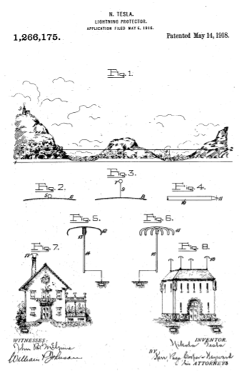

Descarga la patente original en esté enlace


Que se sepa que yo, NIKOLA TESLA , ciudadano de los Estados Unidos, residente en Nueva York, en el condado y en el estado de Nueva York, he inventado ciertas mejoras nuevas y útiles en los protectores contra rayos, de las cuales la siguiente es una descripción completa, clara y exacta.
El objeto de la presente invención es proporcionar protectores contra rayos de un diseño novedoso y mejorado estrictamente en conformidad con el verdadero carácter del fenómeno, más eficientes en acción y mucho más confiables para salvaguardar vidas y propiedades que los empleados hasta ahora.
Para comprender la naturaleza de mi invención y su distinción básica de los pararrayos de uso común, es necesario explicar brevemente los principios sobre los que está diseñado mi protector en contraste con los que subyacen al tipo de pararrayos que prevalece ahora.
Desde la introducción del pararrayos por Benjamin Franklin a finales del siglo XVIII, su adopción como medio de protección contra descargas atmosféricas destructivas ha sido prácticamente universal. Su eficiencia, hasta cierto punto, ha sido establecida indiscutiblemente a través de registros estadísticos, pero en general prevalece, sin embargo, una singular falacia teórica en cuanto a su funcionamiento, y su construcción es radicalmente defectuosa en una característica, a saber, su típica terminal puntiaguda. En mi protector contra rayos evito los puntos y uso un tipo de terminal completamente diferente.
Según la opinión predominante, la virtud del tipo de pararrayos Franklin se basa en gran parte en la propiedad de las puntas o bordes afilados para emitir electricidad al aire. Como lo muestra Coulomb, la cantidad de electricidad por unidad de área, designada por él como "densidad eléctrica" aumenta a medida que se reduce el radio de curvatura de la superficie. Posteriormente se demostró, mediante análisis matemático, que la carga acumulada creaba una fuerza normal hacia afuera igual a 2π veces el cuadrado de la densidad, y el experimento ha demostrado que cuando esta última excede aproximadamente 20 unidades CGS, se forma una serpentina o corona. A partir de estas observaciones y deducciones, es obvio que esto puede suceder a una presión comparativamente baja si el conductor es de radio extremadamente pequeño, o puntiagudo, y es consecuencia de una mala aplicación de estos, y otras, verdades de que el pararrayos comercial de hoy es muy fino y puntiagudo. Mi invención, por el contrario, si bien toma conocimiento de estas verdades, las aplica correctamente en la provisión de un protector contra rayos que proporciona distintivamente un terminal elevado que tiene sus límites de conducción externos dispuestos en superficies de grandes radios de curvatura en dos dimensiones. Los principios que subyacen a mi invención y la correcta aplicación de los cuales dictan la forma y modo de instalación de mi protector, los explicaré ahora en contraste con el pararrayos puntiagudo convencional. los aplica correctamente en la provisión de un protector contra rayos que proporciona distintivamente un terminal elevado que tiene sus límites de conducción externos dispuestos en superficies de grandes radios de curvatura en dos dimensiones. Los principios que subyacen a mi invención y la correcta aplicación de los cuales dictan la forma y modo de instalación de mi protector, los explicaré ahora en contraste con el pararrayos puntiagudo convencional. los aplica correctamente en la provisión de un protector contra rayos que proporciona distintivamente un terminal elevado que tiene sus límites de conducción externos dispuestos en superficies de grandes radios de curvatura en dos dimensiones. Los principios que subyacen a mi invención y la correcta aplicación de los cuales dictan la forma y modo de instalación de mi protector, los explicaré ahora en contraste con el pararrayos puntiagudo convencional.
Al permitir la fuga al aire, se cree popularmente que el pararrayos en forma de aguja realiza dos funciones: una para drenar la tierra de su electricidad negativa, la otra para neutralizar la positiva de las nubes. Hasta cierto punto, hace ambas cosas. Pero un estudio sistemático de las perturbaciones eléctricas en la tierra ha hecho palpablemente evidente que la acción del director de Franklin, como se interpreta tan comúnmente, es principalmente ilusoria. La medición real demuestra que la cantidad de electricidad que escapa, incluso de muchos puntos, es completamente insignificante en comparación con la inducida dentro de un área terrestre considerable, y de ningún momento en el proceso de disipación. Pero es cierto que el aire cargado negativamente en las proximidades de la varilla, convertido en conductor por influencia de la misma, facilita el paso del cerrojo. Por tanto, aumenta la probabilidad de que se produzca una descarga de luz en sus proximidades. Los hechos fundamentales que subyacen a este tipo de pararrayos son: Primero, atrae un rayo, por lo que será golpeado con más frecuencia que el edificio si no estuviera presente; en segundo lugar, deja inofensivas la mayoría, pero no todas, las descargas que recibe; tercero, al hacer que el aire sea conductor y, por otras razones, a veces es la causa de daños en los objetos vecinos; y cuarto, en general, su poder de prevenir lesiones predomina, más o menos, sobre los peligros que invita. hace inofensivas la mayoría de las descargas que recibe, pero no todas; tercero, al hacer que el aire sea conductor y, por otras razones, a veces es la causa de daños en los objetos vecinos; y cuarto, en general, su poder de prevenir lesiones predomina, más o menos, sobre los peligros que invita. hace inofensivas la mayoría de las descargas que recibe, pero no todas; tercero, al hacer que el aire sea conductor y, por otras razones, a veces es la causa de daños en los objetos vecinos; y cuarto, en general, su poder de prevenir lesiones predomina, más o menos, sobre los peligros que invita.
Mi protector, por el contrario, se basa en principios diametralmente opuestos. Su terminal tiene una gran superficie. Asegura una densidad muy baja y preserva las cualidades aislantes del medio ambiente, minimizando así las fugas y actuando así como un cuasi-repelente para aumentar enormemente el factor de seguridad.
Para la mejor y más económica instalación de los dispositivos de protección de acuerdo con mi invención, los factores y fenómenos que dictan el tamaño, el número de protectores y las cualidades físicas del aparato deben ser comprendidos por el ingeniero instalador, y preliminarmente, para una comprensión completa de los principios de mi invento, estos deben explicarse brevemente.
La instalación económica, por supuesto, exige que la capacidad de protección de cualquier equipo dado no sea innecesariamente mayor de lo que se requiere para cumplir con las expectativas máximas en las condiciones que rodean el edificio en particular a proteger, y estas dependen, en parte, como mostraré, de el carácter del paisaje próximo a la obra.
En los dibujos, Figuras 1 a 4 inclusive, son diagramas necesarios para ilustrar los hechos y condiciones relevantes para la determinación de instalaciones específicas de mi invención, y las Figs. 5 a 8 ilustran la construcción y aplicación de los protectores. Específicamente:
La figura 1 es un paisaje adecuado para fines explicativos. Figs. 2, 3 y 4 son diagramas teóricos; Figs. 5 y 6 ilustran formas de protectores mejorados; y Figs. 7 y 8 muestran edificios equipados con los mismos.
En la Fig. 1, 1 representa el área "reducida" de Lord Kelvin de la región, que es virtualmente parte de la superficie oceánica extendida y tranquila. (Ver " Artículos sobre electrostática y magnetismo”Por Sir William Thomson). En condiciones climáticas normales, cuando el cielo está despejado, la cantidad total de electricidad distribuida sobre la tierra es casi la misma que la que estaría contenida dentro de su proyección horizontal. Pero en tiempos de tormenta, debido a la acción inductiva de las nubes, se puede acumular una inmensa carga en la localidad, siendo mayor la densidad en las porciones más elevadas del terreno. Suponiendo esto, en las condiciones existentes en cada momento, trazar otra superficie esférica 2, concéntrica a la tierra, que se puede llamar “niveau eléctrico”, de modo que las cantidades almacenadas encima y debajo de ella sean iguales. En otras palabras, su suma algebraica, tomada relativamente a la superficie imaginaria, en sentido positivo y negativo, es nula.. Los objetos por encima del "niveau" están expuestos a mucho más riesgo que los que están debajo. Por lo tanto, un edificio en 3, en un sitio de densidad excesiva, es propenso a ser golpeado tarde o temprano, mientras que uno en una depresión 4, donde la carga por unidad de área es muy pequeña, es casi completamente seguro. De ello se deduce que un edificio 3 requiere un equipamiento más extenso que el otro. En ambos casos, sin embargo, la probabilidad de ser golpeado disminuye por la presencia de mi protector, mientras que aumentaría por la presencia de la vara Franklin, por razones que ahora explicaré.
La comprensión de las verdades relativas a las descargas eléctricas, pero parte de ellas, y su mala aplicación debido a la falta de una apreciación más completa, ha sido sin duda la responsable de que el pararrayos Franklin adopte su forma convencional en punta, pero consideraciones teóricas y los importantes descubrimientos que se han realizado. en el curso de investigaciones con un transmisor inalámbrico de gran actividad mediante el cual se obtuvieron arcos de un volumen y tensión comparables a los que ocurren en la naturaleza (“Problemas de Incrementar la Energía Humana” Revista Century Junio de 1900 y las Patentes 645,576, 649,621, 787,412 y 1,119,732) establecen de inmediato la falacia de la noción hasta ahora prevaleciente en la que se basa el tipo de varilla Franklin, muestran la novedad distintiva de mi protector contra rayos y guían al constructor en el uso de mi invención.
En la Fig. 2, 5 es una pequeña esfera en contacto con una grande, 6, mostrada parcialmente. Se puede demostrar por la teoría de imágenes eléctricos que cuando los dos cuerpos se pueden alojar por la densidad media en el pequeño uno será sólo π 2/6 = 1.64493 veces mayor que en el otro, (véase “ Electricidad y Magnetismo ” por Clerk Maxwell). En la Fig. 3, las dos esferas 7 y 8 están colocadas a cierta distancia y conectadas a través de un cable delgado 9. Habiendo sido excitado este sistema como antes, la densidad en la esfera pequeña es probable que sea mucho mayor que en la grande. Dado que ambos tienen el mismo potencial, se deduce directamente que las densidades en ellos serán inversamente a sus radios de curvatura. Si la densidad de 7 se designa como dy el radio r, entonces la carga q = 4πr2d , el potencial p = 4πrd y la fuerza hacia afuera, normal a la superficie, f = 2πd2 . Como se indicó anteriormente, cuando d supera las 20 unidades CGS, la fuerza f se vuelve lo suficientemente intensa como para romper el dieléctrico y aparece una serpentina o corona. En esto. caso p = 80πr . Por lo tanto, con una esfera de un centímetro de radio, la disrupción tendría lugar en un potencial p= 80π = 251,328 unidades ES, o 75,398.4 voltios. En realidad, la descarga se produce a una presión más baja como consecuencia de una distribución desigual en la esfera pequeña, siendo mayor la densidad en el lado alejado de la grande. A este respecto, el comportamiento de un conductor puntiagudo es el inverso. En teoría, podría inferirse erróneamente de lo anterior, que las proyecciones agudas permitirían que la electricidad se escape a los potenciales más bajos, pero esto no se sigue. La razón quedará clara a partir de una inspección de la figura 4, en la que se ilustra un conductor 10 en forma de aguja de este tipo, estando marcada una parte diminuta de su extremo ahusado con 11. ¿Se quitó esta parte de la parte grande 10 y se conectó eléctricamente con lo mismo a través de un cable infinitamente delgado, la carga se desprendería fácilmente. Pero la presencia de 10 tiene el efecto de reducir la capacidad de 11, por lo que se requiere una presión mucho mayor para elevar la densidad al valor crítico. Cuanto más grande es el cuerpo, más pronunciada es esta influencia, que también depende de la configuración, y es máxima para una esfera. Cuando el mismo es de tamaño considerable, se necesita una fuerza electromotriz mucho mayor que en circunstancias normales para producir serpentinas desde la punta. Para explicar esta aparente anomalía, se llama la atención sobre la Fig. 3. Si los radios de las dos esferas, 7 y 8, se designan Cuando el mismo es de tamaño considerable, se necesita una fuerza electromotriz mucho mayor que en circunstancias normales para producir serpentinas desde la punta. Para explicar esta aparente anomalía, se llama la atención sobre la Fig. 3. Si los radios de las dos esferas, 7 y 8, se designan Cuando el mismo es de tamaño considerable, se necesita una fuerza electromotriz mucho mayor que en circunstancias normales para producir serpentinas desde la punta. Para explicar esta aparente anomalía, se llama la atención sobre la Fig. 3. Si los radios de las dos esferas, 7 y 8, se designanr y R respectivamente, sus cargas q y Q y la distancia entre sus centros D, el potencial en 7, debido a Q es Q / D. Pero 7, debido a la conexión metálica 9, está en el potencial Q/R = q/r. Cuando D es comparable a R, el medio que rodea a la pequeña esfera normalmente tendrá un potencial no muy diferente al de esta última y es posible que deban aplicarse millones de voltios antes de que salgan las serpentinas, incluso desde bordes afilados que sobresalen. Es importante tener esto en cuenta, porque la Tierra no es más que un vasto globo conductor. De ello se deduce que un pararrayos puntiagudo debe colocarse muy por encima del suelo para que funcione, y de lo anterior resultará evidente que el apuntamiento del extremo, por supuesto efecto emisivo, se neutraliza en parte por el tamaño creciente debajo el extremo, y cuanto más grande es la varilla, para la reducción de la resistencia del electrodo, más pronunciada es esta contrainfluencia.
La idea de que el dispositivo de Franklin sería eficaz para disipar cargas terrestres se remonta a los primeros experimentos con máquinas de fricción estática, cuando se encontró una aguja capaz de drenar rápidamente un cuerpo electrificado aislado. Pero la inaplicabilidad de este hecho a las condiciones de protección contra el rayo será evidente a partir del examen de los simples principios teóricos involucrados, que al mismo tiempo corroboran la conveniencia de establecer protección evitando tal drenaje. La densidad en el extremo puntiagudo fdebería ser inversamente al radio de curvatura de la superficie, pero tal condición es irrealizable. Suponga que la figura 4 representa un conductor de radio 100 veces mayor que el de la aguja; luego, aunque su superficie por unidad de longitud es mayor en el mismo radio, la capacidad es solo el doble. Así, mientras se almacena el doble de la cantidad de electricidad, la densidad de la varilla es sólo una quincuagésima parte de la de la aguja, de lo que se deduce que esta última es mucho más eficiente. Pero el poder emisor de dicho conductor está circunscrito. Imagínese que el extremo “puntiagudo” (en realidad romo o redondeado) se reduzca continuamente de tamaño para aproximarse cada vez más al ideal. Durante el proceso de reducción, la densidad aumentará a medida que el radio de curvatura actúe más pequeño, pero en una proporción claramente menor que lineal; por otra parte, el área del extremo, es decir, la sección a través de la cual la carga sale al aire, disminuirá como el cuadrado del radio. Esta relación por sí sola impone un límite definido al rendimiento de un conductor puntiagudo, y debe notarse que la resistencia del electrodo aumentaría al mismo tiempo. Además, la eficacia de la varilla se ve muy afectada por el potencial debido a la carga del suelo, como se ha indicado con referencia a la Fig. 3. Las estimaciones prácticas de las cantidades eléctricas involucradas en las perturbaciones naturales muestran, además, cuán absolutamente imposibles son las funciones atribuidas al pararrayos puntiagudo. Una sola nube puede contener 2 x 10 Esta relación por sí sola impone un límite definido al rendimiento de un conductor puntiagudo, y debe notarse que la resistencia del electrodo aumentaría al mismo tiempo. Además, la eficacia de la varilla se ve muy afectada por el potencial debido a la carga del suelo, como se ha indicado con referencia a la Fig. 3. Las estimaciones prácticas de las cantidades eléctricas involucradas en las perturbaciones naturales muestran, además, cuán absolutamente imposibles son las funciones atribuidas al pararrayos puntiagudo. Una sola nube puede contener 2 x 10 Esta relación por sí sola impone un límite definido al rendimiento de un conductor puntiagudo, y debe notarse que la resistencia del electrodo aumentaría al mismo tiempo. Además, la eficacia de la varilla se ve muy afectada por el potencial debido a la carga del suelo, como se ha indicado con referencia a la Fig. 3. Las estimaciones prácticas de las cantidades eléctricas involucradas en las perturbaciones naturales muestran, además, cuán absolutamente imposibles son las funciones atribuidas al pararrayos puntiagudo. Una sola nube puede contener 2 x 10 como se ha indicado con referencia a la Fig. 3. Las estimaciones prácticas de las cantidades eléctricas implicadas en las perturbaciones naturales muestran, además, cuán absolutamente imposibles son las funciones atribuidas al pararrayos puntiagudo. Una sola nube puede contener 2 x 10 como se ha indicado con referencia a la Fig. 3. Las estimaciones prácticas de las cantidades eléctricas implicadas en las perturbaciones naturales muestran, además, cuán absolutamente imposibles son las funciones atribuidas al pararrayos puntiagudo. Una sola nube puede contener 2 x 1012 unidades CGS, o más, que inducen en la tierra una cantidad equivalente, que varios pararrayos no pudieron neutralizar en muchos años. Particularmente a las condiciones de ejemplo que pueden tener que cumplirse, se hace referencia al Mundo Eléctrico del 5 de marzo de 1904, donde parece que en una ocasión ocurrieron aproximadamente 12,000 golpes dentro de dos horas dentro de un radio de menos de 50 kilómetros desde el lugar de observación.
Pero aunque el pararrayos puntiagudo es bastante ineficaz en un aspecto señalado, tiene la propiedad de atraer rayos en un alto grado, en primer lugar debido a su forma y en segundo lugar porque ioniza y hace conductivo el aire circundante. Esto se ha establecido sin duda en pruebas prolongadas y continuas con el transmisor inalámbrico mencionado anteriormente, y en esta característica reside la principal desventaja del tipo de aparato Franklin.
Todo lo anterior sirve para demostrar que, dado que es totalmente impracticable efectuar una ecualización de cargas emisivamente a través de pararrayos puntiagudos en las condiciones presentadas por las vastas fuerzas de la naturaleza, una gran mejora radica en la consecución de una probabilidad mínima de impacto de rayo en el planeta. área a proteger junto con una conductividad adecuada para hacer inofensivos aquellos golpes que, no obstante, puedan ocurrir.
Además, una aplicación correcta de las verdades que así se han explicado con referencia al familiar tipo de pararrayos puntiagudo no solo fundamenta la propiedad teórica de la forma en la que desarrollo mi protector contra rayos mejorado, sino que conducirá al ingeniero instalador correctamente a tener en cuenta esas condiciones debido a la ubicación del edificio, con respecto a las formaciones de tierra circundantes y otros edificios, las probabilidades de diferencias máximas de potencial y densidades de carga esperadas bajo las condiciones atmosféricas predominantes del sitio, y la resistencia y capacidades deseables de los electrodos de los protectores instalados.
El protector mejorado, como se indicó anteriormente, se comporta de manera opuesta al tipo Franklin y es incomparablemente más seguro por esta razón. El resultado se asegura mediante el uso de una superficie terminal o conductora de gran radio de curvatura y área suficiente para hacer que la densidad sea muy pequeña y evitar así la fuga de carga y la ionización del aire. El dispositivo puede variar mucho en tamaño y forma, pero es esencial que todos sus elementos conductores externos estén dispuestos a lo largo de una superficie envolvente ideal de gran radio y que tengan un área total considerable.
En la Fig. 5, Fig. 6, Fig. 7 y Fig. 8, se ilustran diferentes tipos de tales terminales y disposiciones de los mismos. En la Fig.5, 12 es una carcasa de metal fundido o hilado de contornos elipsoidales, que tiene en su lado inferior un manguito con un casquillo 13 de porcelana u otro material aislante, adaptado para deslizarse firmemente sobre una varilla 14, que puede ser una pararrayos. La figura 6 muestra un terminal 15 formado por barras metálicas redondeadas o planas que irradian desde un eje central, que se apoya directamente sobre una varilla similar y en contacto eléctrico con la misma. El objeto especial de este tipo es reducir la resistencia al viento, pero es esencial que las barras tengan un área suficiente para asegurar una densidad pequeña, y también que estén lo suficientemente cerca para hacer que la capacidad agregada sea casi igual a la de una capa continua de las mismas dimensiones exteriores. En la Fig. 7 una cubierta en forma de cúpula y puesta a tierra es soportada por una chimenea, cumpliendo así la doble función práctica de capota y protector. Se puede utilizar cualquier tipo de metal en su construcción, pero es indispensable que su superficie exterior esté libre de bordes afilados y salientes de los que puedan emanar serpentinas. De manera similar, los silenciadores, embudos y ventilaciones pueden transformarse en protectores contra rayos eficaces si están equipados con dispositivos adecuados o diseñados de conformidad con esta invención. En la figura 8 se ilustra todavía otra modificación en la que, en lugar de una, se proporcionan cuatro barras puestas a tierra con tantas carcasas hiladas o fijaciones 18, con el objetivo obvio de reducir el riesgo. Se puede utilizar cualquier tipo de metal en su construcción, pero es indispensable que su superficie exterior esté libre de bordes afilados y salientes de los que puedan emanar serpentinas. De manera similar, los silenciadores, embudos y ventilaciones pueden transformarse en protectores contra rayos eficaces si están equipados con dispositivos adecuados o diseñados de conformidad con esta invención. En la figura 8 se ilustra todavía otra modificación en la que, en lugar de una, se proporcionan cuatro barras puestas a tierra con tantas carcasas hiladas o fijaciones 18, con el objetivo obvio de reducir el riesgo. Se puede utilizar cualquier tipo de metal en su construcción, pero es indispensable que su superficie exterior esté libre de bordes afilados y salientes de los que puedan emanar serpentinas. De manera similar, los silenciadores, embudos y ventilaciones pueden transformarse en protectores contra rayos eficaces si están equipados con dispositivos adecuados o diseñados de conformidad con esta invención. En la figura 8 se ilustra todavía otra modificación en la que, en lugar de una, se proporcionan cuatro barras puestas a tierra con tantas carcasas hiladas o fijaciones 18, con el objetivo obvio de reducir el riesgo. Los embudos y las rejillas de ventilación pueden transformarse en protectores contra rayos eficaces si están equipados con dispositivos adecuados o se diseñan de conformidad con esta invención. En la figura 8 se ilustra todavía otra modificación en la que, en lugar de una, se proporcionan cuatro barras puestas a tierra con tantas carcasas hiladas o fijaciones 18, con el objetivo obvio de reducir el riesgo. Los embudos y las rejillas de ventilación pueden transformarse en protectores contra rayos eficaces si están equipados con dispositivos adecuados o se diseñan de conformidad con esta invención. En la figura 8 se ilustra todavía otra modificación en la que, en lugar de una, se proporcionan cuatro barras puestas a tierra con tantas carcasas hiladas o fijaciones 18, con el objetivo obvio de reducir el riesgo.
De lo anterior quedará claro que en todos los casos el terminal evita las fugas de electricidad y la consiguiente ionización del aire. Es indiferente para este fin si está aislado o no. Si se golpea, la corriente pasará fácilmente al suelo, ya sea directamente o, como en la figura 5, a través de un pequeño espacio de aire entre 12 y 14. Pero tal accidente se vuelve extremadamente improbable debido al hecho de que hay puntos en todas partes. y proyecciones en las que la carga terrestre alcanza una alta densidad y donde el aire se ioniza. Por tanto, la acción del protector mejorado es equivalente a una fuerza repelente. Siendo esto así, no es necesario sostenerlo a gran altura, pero la conexión a tierra debe hacerse con el cuidado habitual y el conductor que conduce a ella debe ser de la menor autoinducción y resistencia posible.
Reclamo como mi invento:
Fechado el día 14 de Mayo de 1918. .
Nikola Tesla.